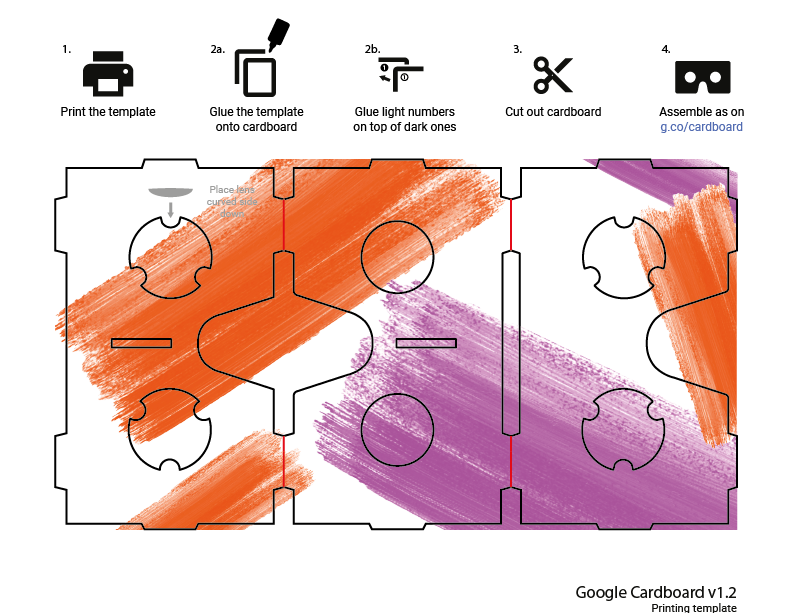
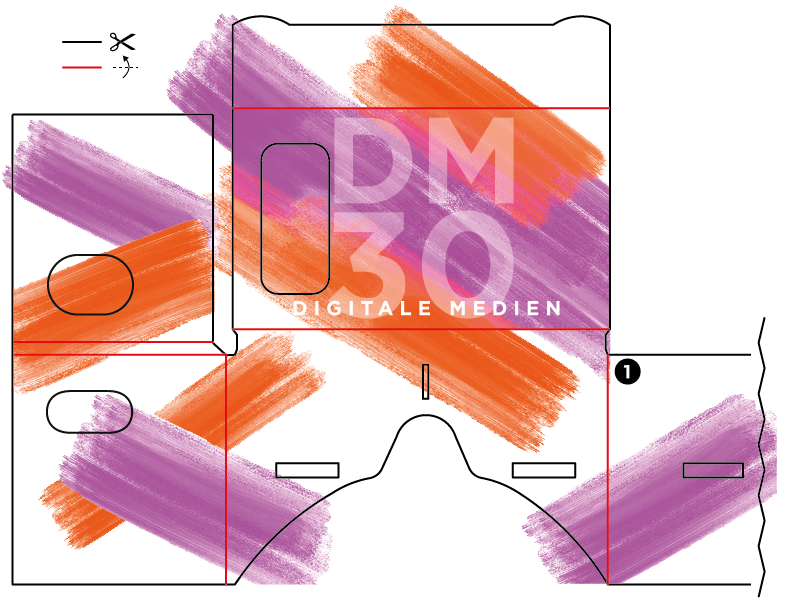
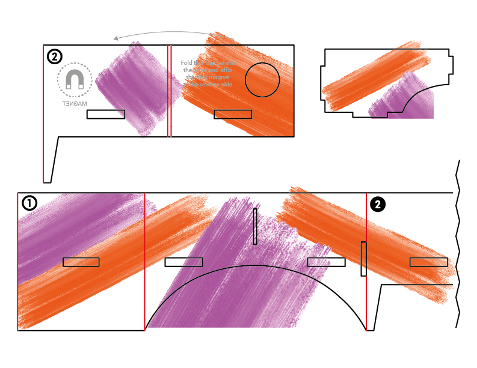
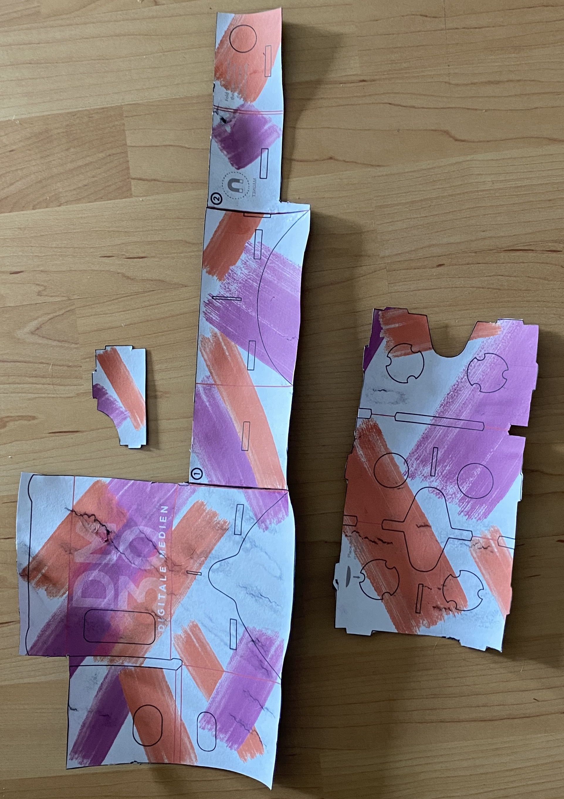
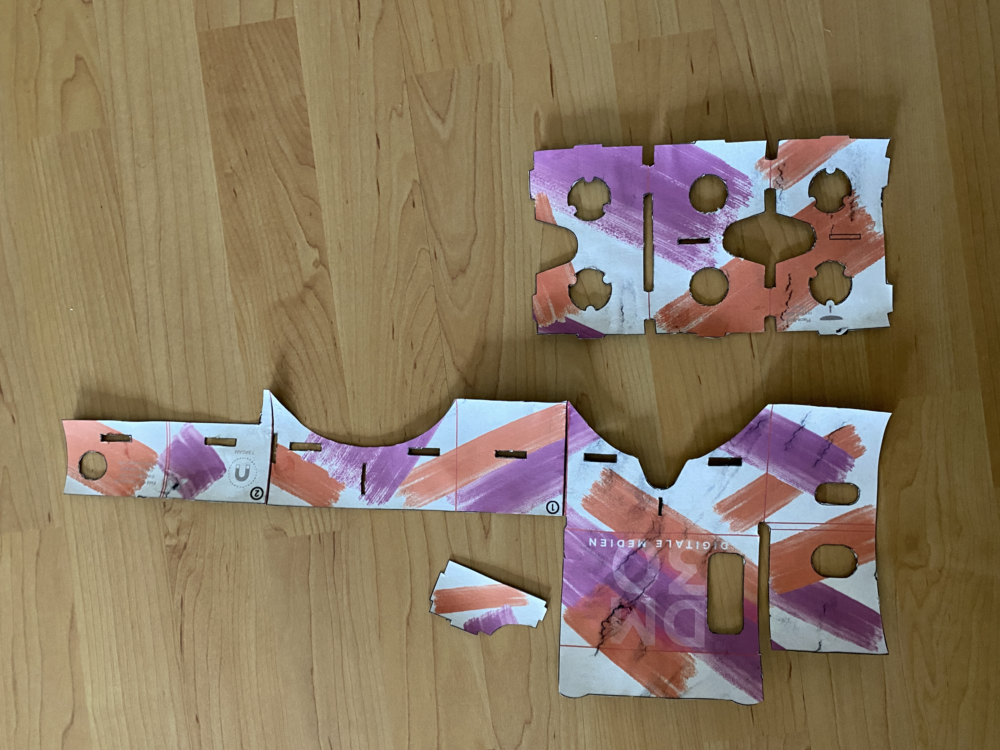
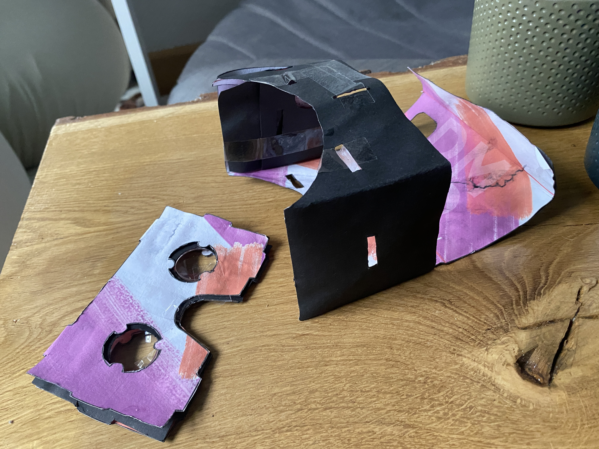
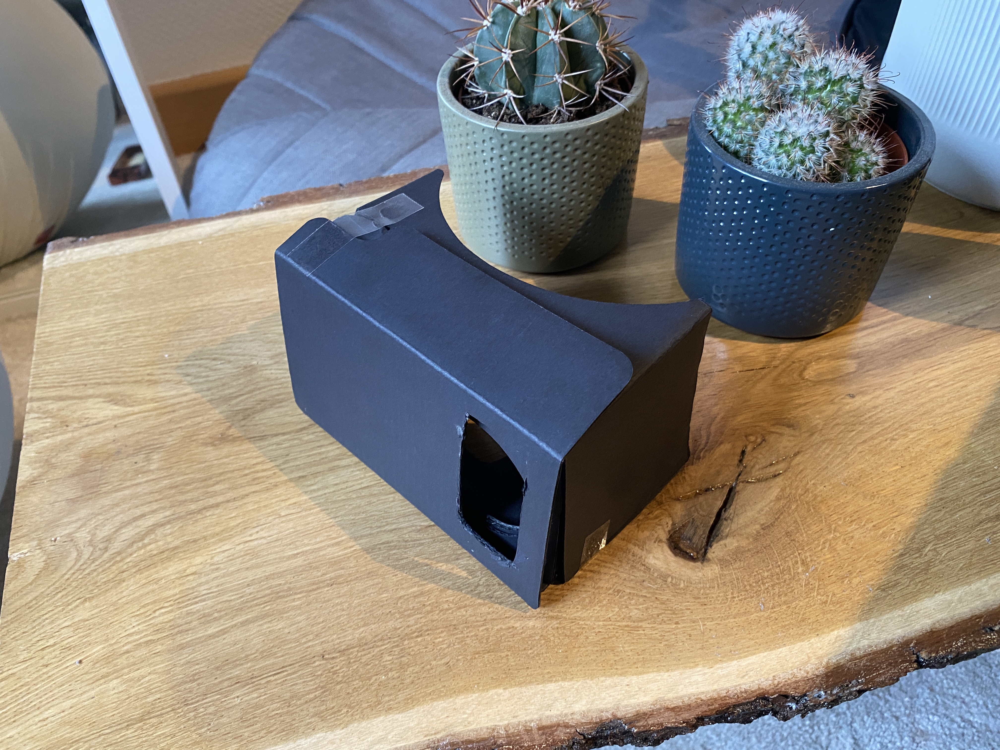
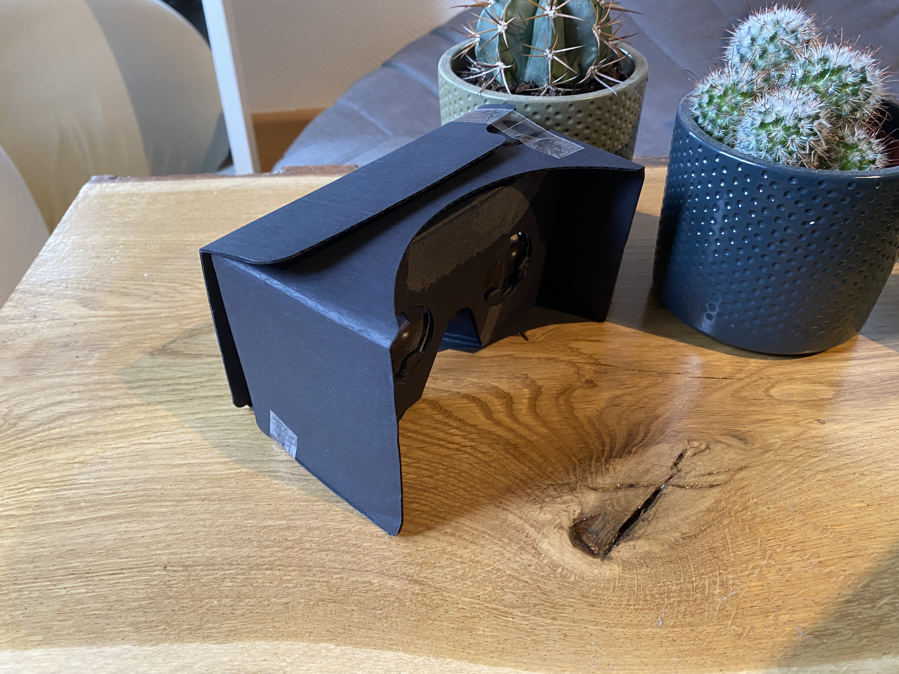

VR Brille
Design
Ich habe mich beim Design an unserem Projetstudium orientiert, weil ich die Farben und die Pinselstriche sehr schön finde.



Ausschneiden
Dann habe ich alles auf schwarzes Papier geklebt und ausgeschnitten.


Zusammensetzten
Im nächsten Schritt habe ich die Brille zusammengesetzt und leider keine Fotos gemacht.
Die fertige VR-Brille
Ironischrerweise wurde beim Spielen mit einer echten VR-Brille Tee über mein Modell geschüttet und ich konnte leider nur noch diese Fotos davon machen.

Hier nun das Bild meiner neune VR-Brille.

